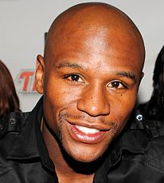

Флойд Мейвезер - народ. 24 лютого 1977, Гранд-Рапідс, Мічиган, США - непереможний американський боксер-професіонал. Багаторазовий чемпіон світу за різними версіями в другій напівлегкій, легкій, першій напівсередній, напівсередній, першій середній вазі. Найкращий боксер 1998 та 2007 років за версією журналу The Ring. У Флойда Мейвезера відразу сформувався особливий тип бою - не дуже видовищний, але дуже ефективний, який дозволив йому регулярно ставати переможцем. Флойд Мейвезер, за підрахунками журналу «Forbes», починаючи з 2012 року є найбагатшим боксером світу. У 2010 році дохід спортсмена становив $ 60 млн на рік. На даний момент стан знаменитості оцінюється більш ніж в $ 1 млрд.